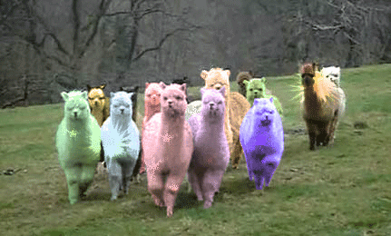

|
Radchaneeporn Changpun I'm a graduate student in computer science at Department of Computer Engineering, Chulalongkorn University in Bangkok, Thailand. CV / Github / Huggingface / Linkedin / Email |

|
ResearchI'm interested in data science, machine learning, and deep learning. Area of my research is about Large Language Models. |
Projects |
|

|
Project Github I developed a RAG technique to improve the hallucination of Llama2-13B using the vector database created from Scopus publications |

|
Project Github I conducted fine-tuning on Thai LLMs, specifically Typhoon 7B from SCB 10x, using the Thai wiki dataset V3 to explore improvements in the model for Q&A tasks |
Publications |

|
Prathana Nimmanterdwong, Radchaneeporn Changpun, Patipon Janthboon, el al. Link to Paper This publication is about applying a function in the MATLAB program and knowledge of Data Science to develop an artificial neural network model for predicting hydrogen sulfide solubility in natural gas purification processes. The model obtained a coefficient of determination (R2) of 0.9817 and a mean square error (MSE) of 0.0014. |
|
This website is adapted from the source code from jonbarron's website. |